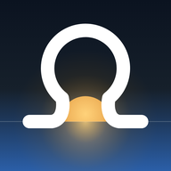
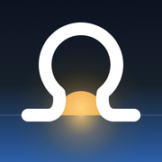

OMEGA is the brand; SkyFund is the app. The mark is a dawn seen through the OMEGA glyph: the omega's feet are the horizon and a gold sun rises between its legs — sky, and a return. Same glyph as the platform's neon mark, drawn heavy and white so it survives a 32-pixel favicon.
Full-bleed square. iOS rounds it and Android masks it, so everything that matters sits inside the central 80%. Use the PNGs for home screens and favicons, the SVG anywhere it can scale.


The wordmark is Archivo ExtraBold; "powered by OMEGA" is Inter SemiBold, tracked. On navy the word OMEGA carries the platform's neon gradient; on light grounds it is drafting blue. Text is outlined in the SVGs, so no font needs to be installed.
The platform's drawing-set palette (omega-theme.css), plus the dawn gold the sun carries.
| File | Use |
|---|---|
| skyfund-icon.svg | Master icon, 1024 viewBox. Top bars, anywhere scalable. |
| skyfund-icon-1024.png · 512 · 192 · 180 · 32 | App store / PWA icons, Android launcher, iOS home screen (180), favicon (32). |
| skyfund-icon-maskable-512.png | Android adaptive icon (safe zone respected). |
| skyfund-lockup-dark.svg / -light.svg | Icon + wordmark + "powered by OMEGA". Headers, decks, documents. |
| skyfund-wordmark-dark.svg / -light.svg | Text only, when the icon is already on screen. |